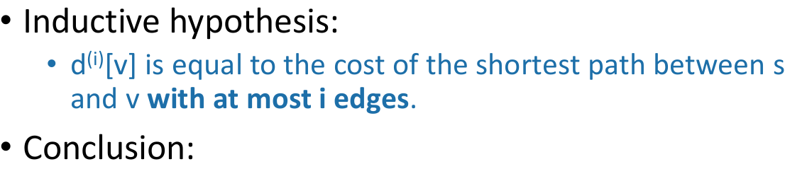
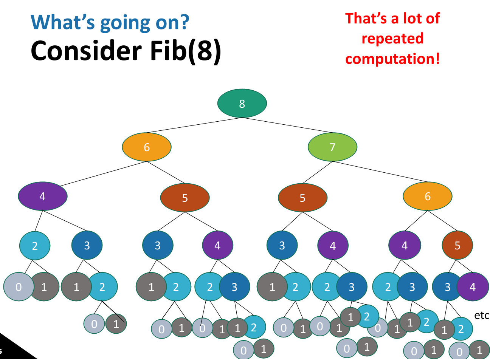

Algorithms week 11
Dynamic programming
- Bellman-Ford algorithm
- Fibonacci Numbers
- Floyd-Warshall algorithm
Another problems
- Longest common subsequence
- knapsack
- Independent sets
Bellman-Ford

Bellman-Ford vs. Dijkstra
Bellman-Ford

Interpretation of \(d^{(i)}\)
Why does Bellman-Ford work?

Inductive step
Proof by induction
Bellman-Ford Algorithm
Shortest paths
Aside: Link-state vs Distance-vector
Important thing about Bellman-Ford for the rest of this lecture
Bellman-Ford is an example of dynamic programming!
Example: How to compute Fibonacci numbers
Candidate algorithm

Maybe this would be better
What is dynamic programming?
Elements of dynamic programming
Two ways to think about and/or implement DP algorithms
- Top down
- Bottom up
Bottom up approach

Top down approach
Example of top-down Fibonacci
Memo-ization visualization